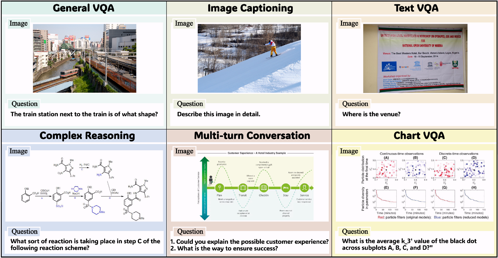
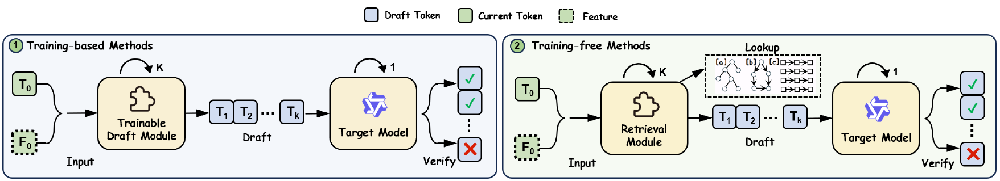
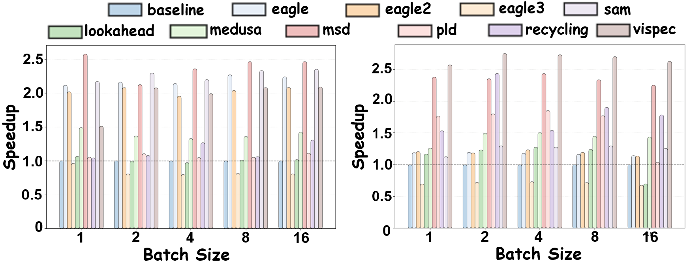
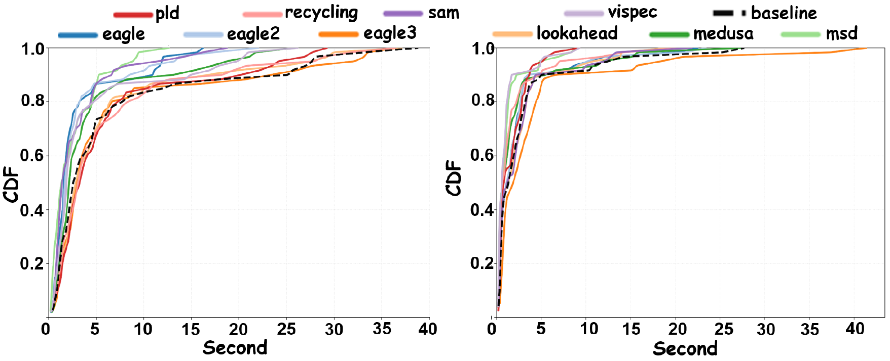
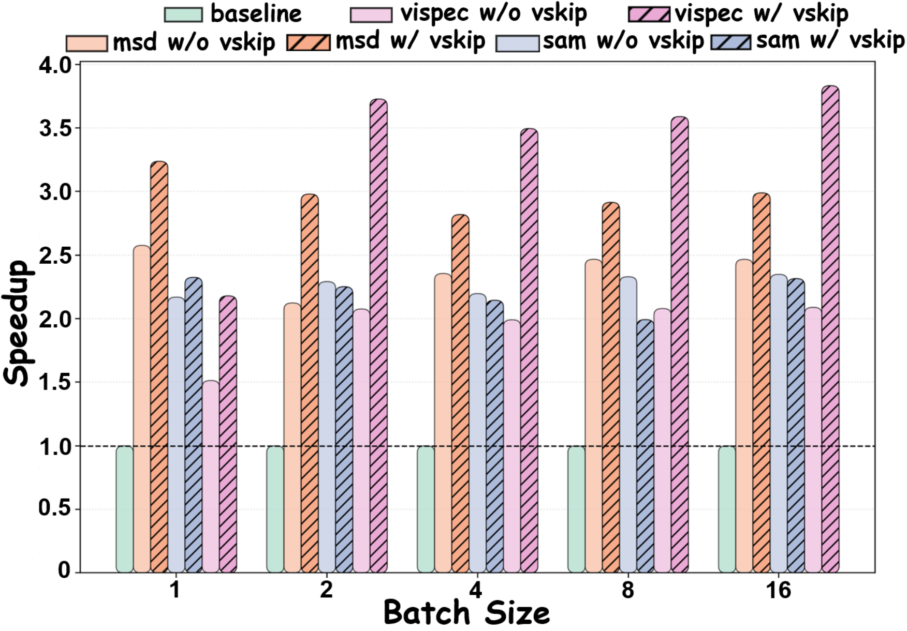
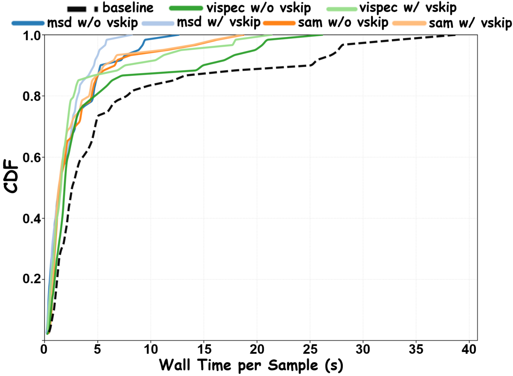
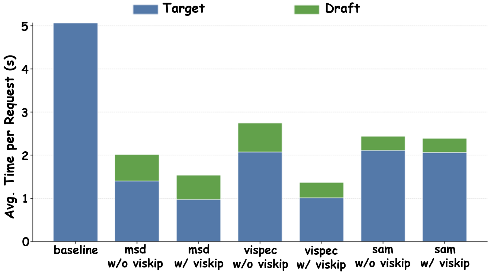

MMSpec is the first benchmark dedicated to speculative decoding for vision-language models. It contains 600 multimodal samples from 6 task categories, integrates 10 representative speculative decoding algorithms under a unified framework, and introduces ViSkip, a plug-and-play method that adaptively disables drafting on vision-critical decoding steps.
Vision-language models achieve strong performance on multimodal tasks but still suffer from high inference latency due to large model sizes and long multimodal contexts. MMSpec benchmarks speculative decoding in this setting with a unified evaluation protocol over six representative multimodal workloads. The benchmark reveals three core findings: methods built for text-only LLMs degrade in multimodal scenarios, vision awareness becomes increasingly important at larger batch sizes, and throughput speedup alone does not reliably reflect latency performance.
Motivated by these results, the project introduces ViSkip, a vision-aware speculative decoding strategy that estimates whether the current decoding step depends heavily on image tokens and dynamically switches between speculative decoding and standard autoregressive decoding.
MMSpec is built for fair third-party comparison of multimodal speculative decoding methods. All methods are evaluated on the same device setup, in the same software environment, with the same measurement protocol. The benchmark is designed around workload diversity, balanced topic coverage, explicit multi-turn support, and method-agnostic measurement.

Sampled data across the six MMSpec task categories.
100 samples from GQA.
Avg. output: 46.98 tokens100 samples from TextVQA.
Avg. output: 63.15 tokens100 samples from COCO.
Avg. output: 191.90 tokens100 samples from CharXiv.
Avg. output: 68.56 tokens100 samples from MMMU-Pro.
Avg. output: 285.60 tokens100 samples from ConvBench and MM-MT-Bench.
Avg. output: 747.65 tokensMMSpec unifies ten representative lossless speculative decoding methods, spanning training-based and training-free approaches. This makes the benchmark suitable for apples-to-apples comparison rather than isolated case studies.

Overview of speculative decoding algorithms evaluated in the MMSpec framework.
| Method | Key Idea | Drafting | Vision Awareness | Category |
|---|---|---|---|---|
| ViSpec | Vision-token compression for efficient multimodal drafting. | Linear | Vision-aware | Training-based |
| MSD | Train a multimodal draft model with staged VLM training. | Linear | Vision-aware | Training-based |
| EAGLE-1 / 2 / 3 | Feature-level or token-level drafting from target hidden states. | Linear / Tree | Vision-agnostic | Training-based |
| Medusa | Multi-head tree proposals from a single forward pass. | Tree | Vision-agnostic | Training-based |
| SAM Decoding | Suffix-automaton continuation retrieval for draft generation. | Linear | Vision-agnostic | Training-free |
| Lookahead | Trie-based retrieval of multi-token continuations with tree verification. | Tree | Vision-agnostic | Training-free |
| Recycling | Reuses discarded candidates as speculative draft tree nodes. | Tree | Vision-agnostic | Training-free |
| PLD | Prompt n-gram lookup replaces an external draft model. | Linear | Vision-agnostic | Training-free |
Model-free methods provide very limited gains and sometimes slow down multimodal decoding.
Training-based methods that ignore visual information still underperform in VLM inference.
Throughput speedup alone is not enough. Stable latency behavior matters for real deployments.
The main evaluations are conducted on Qwen2.5-VL-7B-Instruct and LLaVA-1.5-7B. MMSpec reports both Mean Accepted Tokens (MAT) and Walltime Speedup Ratio, highlighting that speculative decoding should be judged from both token acceptance and end-to-end latency efficiency.
2.58×
Best overall speedup in the main table, achieved by MSD.
2.58×
Best overall speedup in the main table, achieved by ViSpec.
10
Representative speculative decoding algorithms evaluated under one framework.

Vision-aware methods remain the most robust as batch size increases, while non-vision-aware methods degrade more sharply.

Latency CDFs show that methods with higher average throughput do not always yield the best or most stable wall-clock behavior.
ViSkip dynamically alternates between standard autoregressive decoding and speculative drafting according to the current token state's visual relevance. At each decoding step, it computes cross-attention between the decoder hidden state and visual tokens, extracts a visual relevance score, and only enables speculation when that score is below a threshold.
In short: when the next token strongly depends on the image, skip speculative drafting; otherwise, draft aggressively and verify with the full model.

ViSkip improves speedup trends across batch sizes when combined with existing methods.

Latency CDFs shift left after integrating ViSkip, indicating faster completion for most samples.

Latency breakdowns show that ViSkip primarily reduces expensive full-model verification time.
The central takeaway of ViSkip is simple: speculative decoding is least reliable exactly when generation is most grounded in visual evidence. By detecting these steps and skipping drafting only when needed, ViSkip improves existing methods without changing their core speculative decoding mechanics.
@article{shen2025mmspec,
title={MMSpec: Benchmarking Speculative Decoding for Vision-Language Models},
author={Hui Shen and Xin Wang and Ping Zhang and Yunta Hsieh and Qi Han and Zhongwei Wan and Ziheng Zhang and Jingxuan Zhang and Jing Xiong and Ziyuan Liu and Yifan Zhang and Hangrui Cao and Chenyang Zhao and Mi Zhang},
year={2025},
note={Preprint}
}